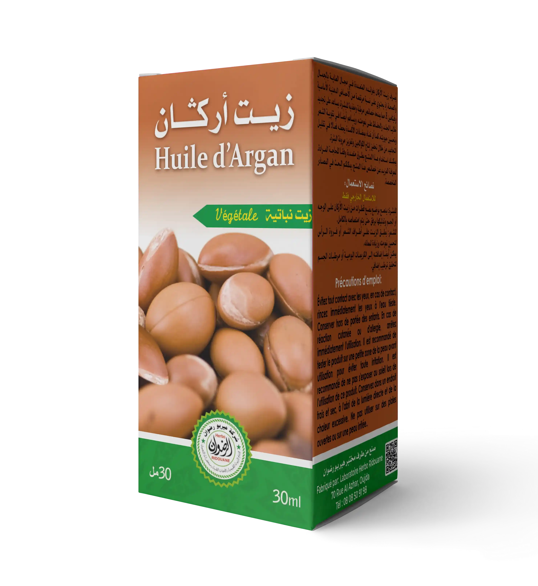

الزيوت
ألوان وخطوط ومكوّنات الكتالوج. الشعار النصي مؤقت، والتشكيلة النهائية وتفاصيل البيع تحتاج اعتماداً قبل الإنتاج.
#F7F3EA#26231E#B68128#6C6254#837766الفحمي للنص والأزرار الرئيسية. الذهبي لتحديد الحالة والتركيز، مع نص داكن فوقه. الذهبي الداكن #78511D للنصوص الصغيرة وإطار التركيز.
تصفّح المنتوجات حسب الفئة، وتعرّف إلى أسمائها وتفاصيلها.
خط Noto Naskh Arabic للشعار النصي فقط. الخطوط محلية وتراخيصها محفوظة. العربية لغة المعاينة، ولغات الإطلاق لم تُحسم.
ارتفاع 44 px على الأقل. الضغط بالمؤشر يصغّر الزر قليلاً لمدة 140 ms. التفاعل بلوحة المفاتيح وتصفية النتائج فوريان، وتُلغى الحركة عند تفضيل الحركة المخفّفة.
24 منتوجاً في الكتالوج.
مسح البحث يحذف النص فقط ويحافظ على الفئة الفرعية؛ يتعطّل الزر عندما يكون البحث فارغاً. استعادة النتائج الفارغة تمسح البحث والفئة الفرعية معاً.
مثال اختيار فئة فرعية:

تحتفظ مساحة الصورة بحجمها أثناء التحميل.
يبقى اسم المنتوج ورابط تفاصيله متاحين عند تعذّر تحميل الصورة.
| العرض | 1240 px كحد أقصى. هوامش 16 px على الهاتف. |
|---|---|
| الفئات | شبكة الرئيسية: أربعة أعمدة على سطح المكتب، وعمودان حتى عرض 760 px. تصفية الكتالوج: قائمة جانبية على سطح المكتب، واختيار فئة مسمّى على الهاتف يُظهر الفئة الحالية. |
| المنتوجات | أربعة أعمدة في الرئيسية، وثلاثة في الكتالوج. عمودان على الهاتف. |
| الزوايا | 4 px للحقول والأزرار، و6 px لمساحات صور المنتوجات. |
| الأيقونات | SVG بخط 1.6 px. الأزرار التي تحمل أيقونة فقط لها اسم مقروء لقارئ الشاشة. |
| الحركة | 140 ms للضغط بالمؤشر. منحنى cubic-bezier(.23,1,.32,1). لا حركة دخول للأقسام. |